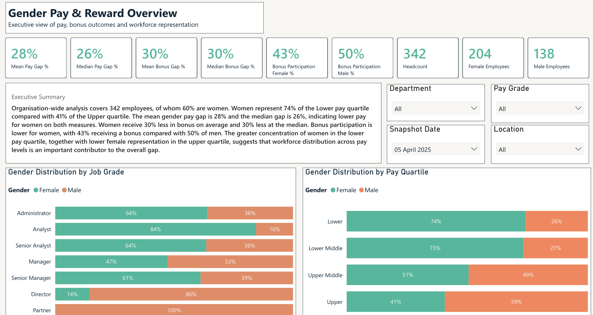
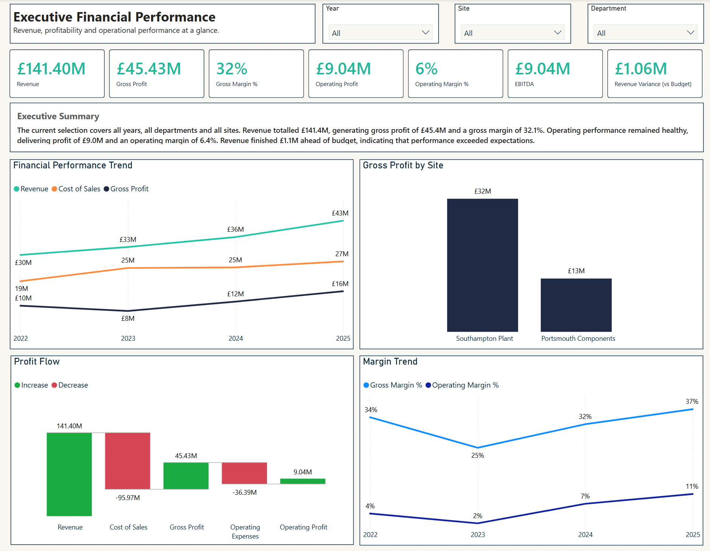
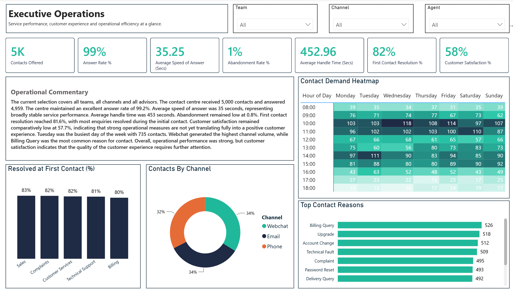
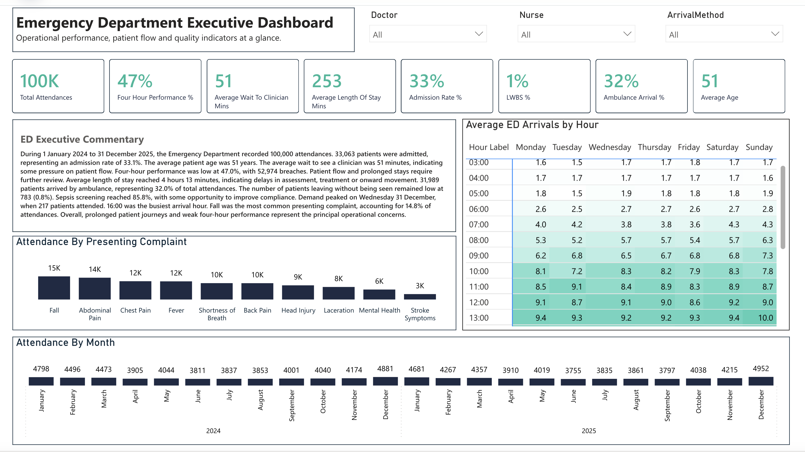

Reporting takes too long
Time is spent collecting, checking and rebuilding information instead of using it to understand performance and make decisions.
REPORTING • DATA • PRACTICAL SOLUTIONS
I work directly with organisations to improve reporting, reduce manual effort and turn complex information into something people can understand, trust and use.
Why businesses get in touch
Most organisations already have the information they need. The challenge is turning that information into something people can trust, understand and use.
Time is spent collecting, checking and rebuilding information instead of using it to understand performance and make decisions.
Processes and systems that worked at one stage of growth can become difficult to maintain as requirements increase.
Regulatory reporting, governance and stakeholder expectations require information that is accurate, consistent and available when it matters.
How I help
I work directly with clients, taking the time to understand the challenge and identify what will make the biggest difference. Experience, close collaboration and practical delivery help turn that understanding into value quickly.
Bring information together in a clear, accessible way so people can explore performance, identify what is driving it and make informed decisions.
Improve the way regulatory information is prepared, checked and submitted so deadlines are easier to manage.
Reduce repetitive work by improving how information is prepared, cleansed, moved and reused.
Case studies
Workforce and regulatory reporting
Bring payroll, bonus and workforce information together so decision makers can understand what is driving the gender pay gap rather than reviewing one figure in isolation.
Explore the case studyFINANCE AND MANAGEMENT REPORTING
Bring revenue, profitability, budgets and customer performance together so leaders can see what has changed and where attention is needed.
Explore the case studyCUSTOMER AND OPERATIONAL REPORTING
Bring contact demand, service levels, customer outcomes and adviser performance together so managers can identify patterns, understand pressure points and make informed decisions.
Explore the case studyHEALTHCARE OPERATIONS
Bring attendance, waiting-time and outcome information together so operational teams can identify demand patterns and areas where patient flow is slowing.
Explore the case study
Reporting · Workforce
Understand pay gaps, bonus outcomes, representation and the organisational structure behind the headline figures.
View case study →
Reporting · Finance
Bring revenue, margins, budgets and customer performance together in a clear management view.
View case study →
Reporting · Operations
Bring contact demand, service levels, customer outcomes and adviser performance together so managers can identify patterns, understand pressure points and make informed decisions.
View case study →
Reporting · Healthcare
Explore demand, waiting times, patient flow and operational performance.
View case study →All demonstration dashboards use synthetic data and fictional organisations. No real client, employee or patient information is shown.
Start with a conversation
Tell me what you are trying to achieve, where the current approach is creating difficulty and what better would look like. I’ll give you an honest view of how I can help.